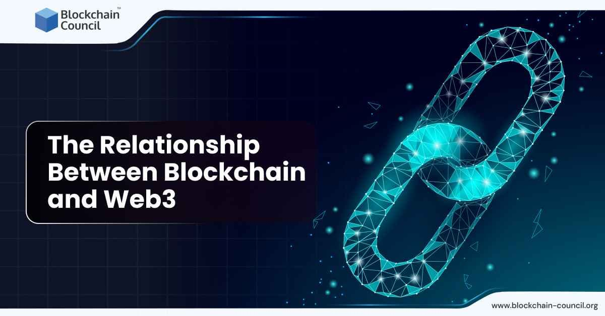

Blockchain y Web3

El curso de Blockchain y Web3 está orientado a alumnos interesados en comprender las nuevas tecnologías
descentralizadas y su impacto dentro del mundo digital.
A través de esta formación, el alumno conocerá los conceptos principales de blockchain, activos digitales,
contratos inteligentes y nuevas formas de crear proyectos en internet.
Contenido del curso
En este curso se introducen los conceptos fundamentales del ecosistema Web3:
- Qué es blockchain.
- Cómo funcionan las redes descentralizadas.
- Introducción a los activos digitales.
- Concepto de contratos inteligentes.
- Aplicaciones de Web3 en proyectos digitales.
- Seguridad básica dentro del entorno blockchain.
- Oportunidades profesionales relacionadas con Web3.
Objetivo del curso
El objetivo principal del curso es que el alumno comprenda las bases de blockchain y Web3, pudiendo
identificar sus usos, oportunidades y aplicaciones dentro del sector tecnológico.